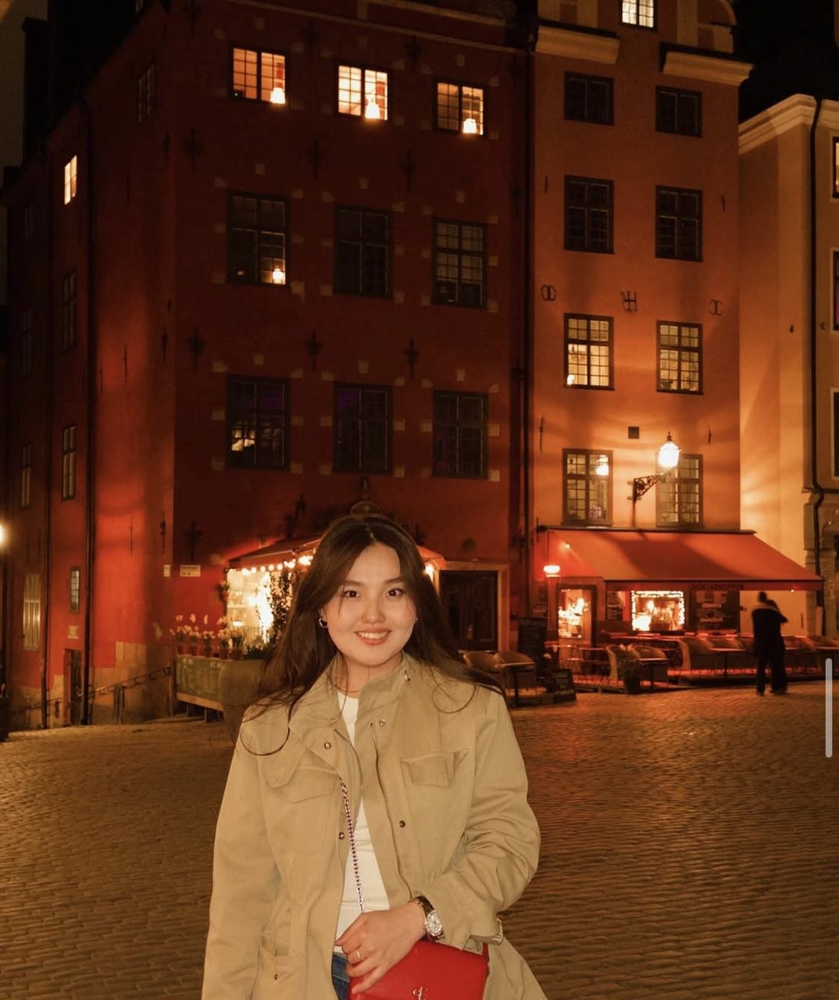

Саған бір сұрағым бар... 💌

Aray, менімен кездесуге шығасың ба? 💕
📅 Ертең, 23 мамыр
🕔 17:00
📍 Кипсала, Рига
💖
Иә! 🎉
Ертең сағат 17:00-де Кипсалада кездесеміз!
Сені асыға күтемін ❤️
Саған бір сұрағым бар... 💌

Ертең сағат 17:00-де Кипсалада кездесеміз!
Сені асыға күтемін ❤️